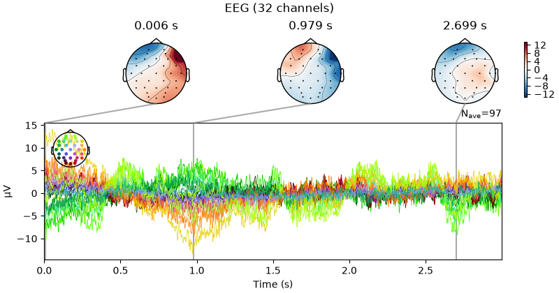
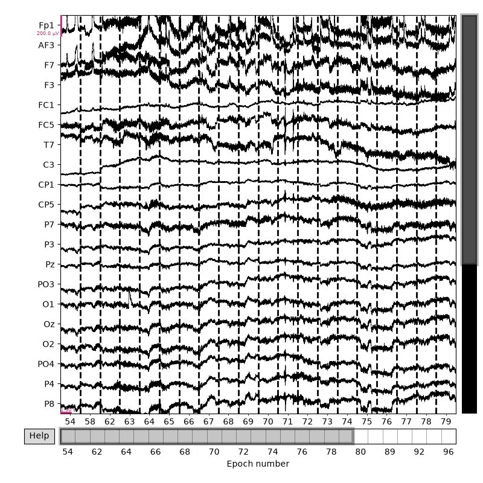
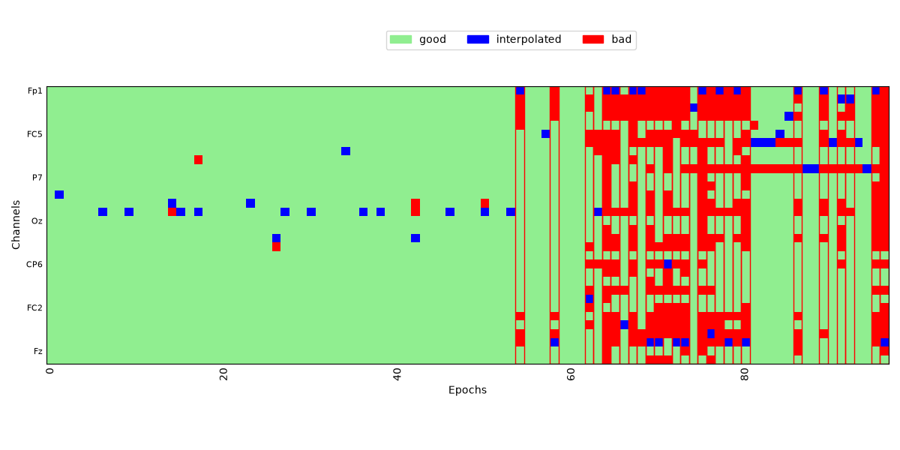
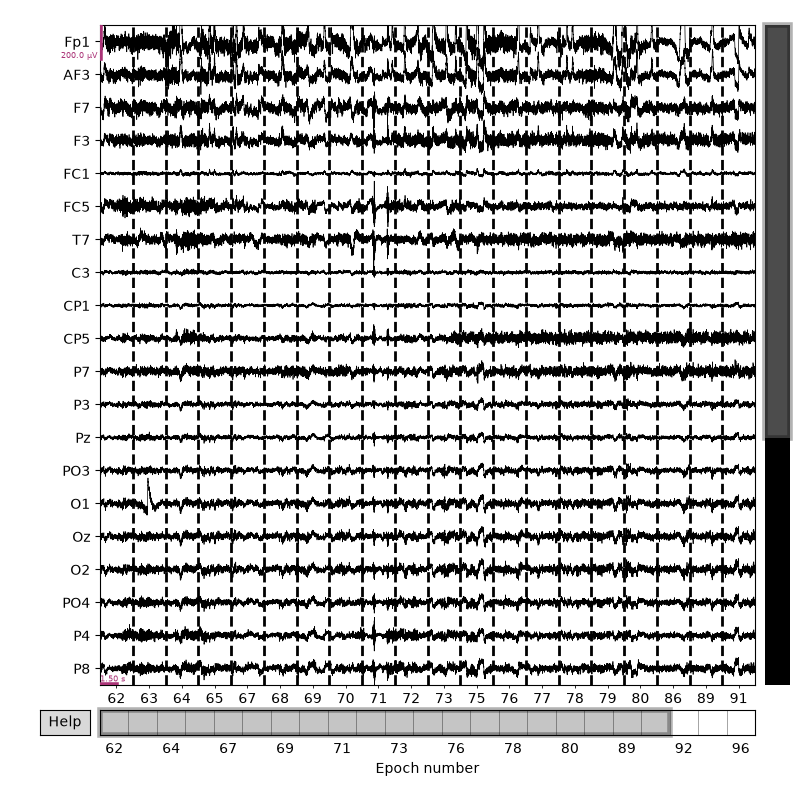
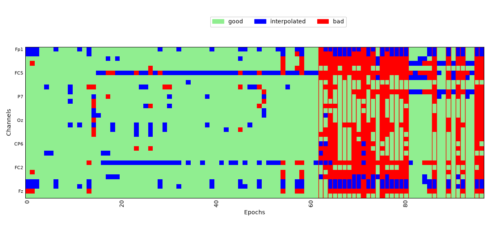
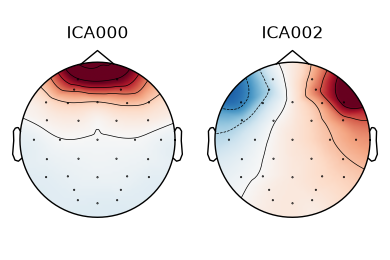
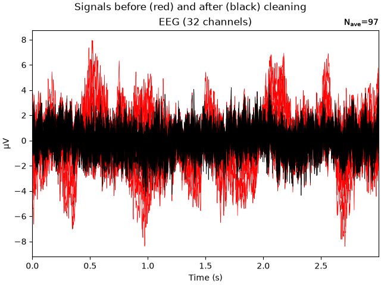
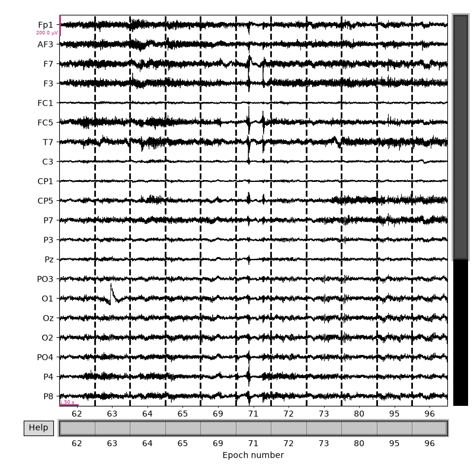
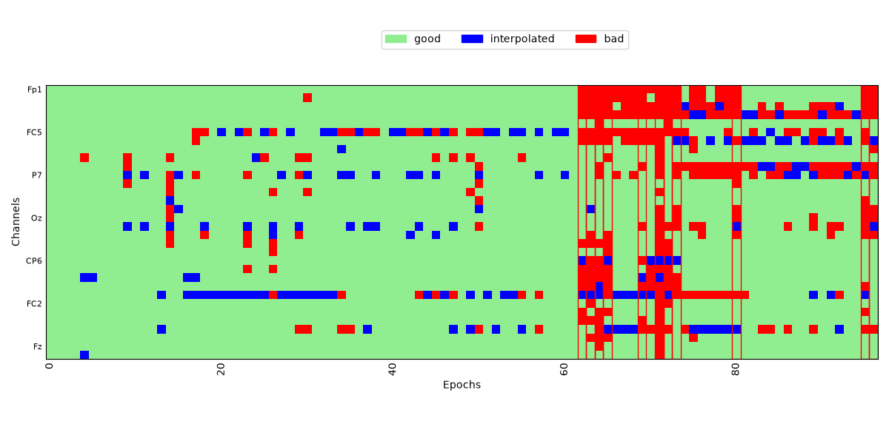
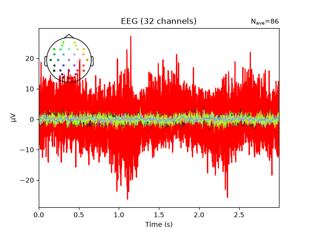

Note
Go to the end to download the full example code.
Preprocessing workflow with autoreject and ICA#
This example demonstrates how to visualize data when preprocessing
with autoreject and discusses decisions about when and which
other preprocessing steps to use in combination.
tldr: We recommend that you first highpass filter the data, then run autoreject (local) and supply the artifact-free epochs to the ICA algorithm for a robust fit, and finally run autoreject (local) again.
# Author: Alex Rockhill <aprockhill@mailbox.org>
# Mainak Jas <mjas@mgh.harvard.edu>
# Apoorva Karekal <apoorvak@uoregon.edu>
#
# License: BSD-3-Clause
# sphinx_gallery_thumbnail_number = 9
First, we download resting-state EEG data from a Parkinson’s patient
from OpenNeuro. We will do this using openneuro-py which can be
installed with the command pip install openneuro-py.
import os
import matplotlib.pyplot as plt
import openneuro
import mne
import autoreject
dataset = 'ds002778' # The id code on OpenNeuro for this example dataset
subject_id = 'pd14'
target_dir = os.path.join(
os.path.dirname(autoreject.__file__), '..', 'examples', dataset)
os.makedirs(target_dir, exist_ok=True)
openneuro.download(dataset=dataset, target_dir=target_dir,
include=[f'sub-{subject_id}/ses-off'])
🌍 Preparing to download ds002778 …
📥 Checking 12 files, downloading as needed (5 concurrent downloads).
Overall ━━━━━━━━━━━━━━━━━━━━━━━━━━━━━━━━━━━━ 100% 18.4/18.4 MB 49.3 kB/s 0:00:00
✅ Finished downloading ds002778 (downloaded 0 files and 0 B).
We will now load in the raw data from the bdf file downloaded from OpenNeuro and, since this is resting-state data without any events, make regularly spaced events with which to epoch the raw data. In the averaged plot, we can see that there may be some eyeblink artifact contamination but, overall, the data is typical of resting-state EEG.
raw_fname = os.path.join(target_dir, f'sub-{subject_id}', 'ses-off', 'eeg',
'sub-pd14_ses-off_task-rest_eeg.bdf')
raw = mne.io.read_raw_bdf(raw_fname, preload=True)
dig_montage = mne.channels.make_standard_montage('biosemi32')
raw.drop_channels([ch for ch in raw.ch_names
if ch not in dig_montage.ch_names])
raw.set_montage(dig_montage) # use the standard montage
epochs = mne.make_fixed_length_epochs(raw, duration=3, preload=True)
# plot the data
epochs.average().detrend().plot_joint()

Extracting BDF parameters from /home/circleci/project/autoreject/../examples/ds002778/sub-pd14/ses-off/eeg/sub-pd14_ses-off_task-rest_eeg.bdf...
Setting channel info structure...
Creating raw.info structure...
Reading 0 ... 149503 = 0.000 ... 291.998 secs...
Not setting metadata
97 matching events found
No baseline correction applied
0 projection items activated
Using data from preloaded Raw for 97 events and 1536 original time points ...
0 bad epochs dropped
No projector specified for this dataset. Please consider the method self.add_proj.
<Figure size 800x420 with 6 Axes>
Autoreject without any other preprocessing#
Now, we’ll naively apply autoreject as our first preprocessing step.
As we can see in the plot of the rejected epochs, there are many eyeblinks that caused the epoch to be dropped. This resulted in a lot of the data being lost.
The data looks fairly clean already and we don’t want to interpolate more than a few sensors since we only have 32 to start, so the number of channels to interpolate was set to check some low numbers
ar = autoreject.AutoReject(n_interpolate=[1, 2, 3, 4], random_state=11,
n_jobs=1, verbose=True)
ar.fit(epochs[:20]) # fit on a few epochs to save time
epochs_ar, reject_log = ar.transform(epochs, return_log=True)
Running autoreject on ch_type=eeg
0%| | Creating augmented epochs : 0/32 [00:00<?, ?it/s]
34%|███▍ | Creating augmented epochs : 11/32 [00:00<00:00, 638.84it/s]
69%|██████▉ | Creating augmented epochs : 22/32 [00:00<00:00, 633.97it/s]
100%|██████████| Creating augmented epochs : 32/32 [00:00<00:00, 641.94it/s]
0%| | Computing thresholds ... : 0/32 [00:00<?, ?it/s]
3%|▎ | Computing thresholds ... : 1/32 [00:00<00:00, 56.50it/s]
6%|▋ | Computing thresholds ... : 2/32 [00:00<00:00, 57.67it/s]
9%|▉ | Computing thresholds ... : 3/32 [00:00<00:00, 58.60it/s]
12%|█▎ | Computing thresholds ... : 4/32 [00:00<00:00, 59.18it/s]
16%|█▌ | Computing thresholds ... : 5/32 [00:00<00:00, 59.64it/s]
19%|█▉ | Computing thresholds ... : 6/32 [00:00<00:00, 59.74it/s]
22%|██▏ | Computing thresholds ... : 7/32 [00:00<00:00, 59.80it/s]
25%|██▌ | Computing thresholds ... : 8/32 [00:00<00:00, 59.89it/s]
28%|██▊ | Computing thresholds ... : 9/32 [00:00<00:00, 59.94it/s]
31%|███▏ | Computing thresholds ... : 10/32 [00:00<00:00, 60.00it/s]
34%|███▍ | Computing thresholds ... : 11/32 [00:00<00:00, 60.06it/s]
38%|███▊ | Computing thresholds ... : 12/32 [00:00<00:00, 60.11it/s]
41%|████ | Computing thresholds ... : 13/32 [00:00<00:00, 60.09it/s]
44%|████▍ | Computing thresholds ... : 14/32 [00:00<00:00, 60.17it/s]
47%|████▋ | Computing thresholds ... : 15/32 [00:00<00:00, 60.16it/s]
50%|█████ | Computing thresholds ... : 16/32 [00:00<00:00, 60.15it/s]
53%|█████▎ | Computing thresholds ... : 17/32 [00:00<00:00, 60.11it/s]
56%|█████▋ | Computing thresholds ... : 18/32 [00:00<00:00, 60.24it/s]
59%|█████▉ | Computing thresholds ... : 19/32 [00:00<00:00, 60.31it/s]
62%|██████▎ | Computing thresholds ... : 20/32 [00:00<00:00, 60.34it/s]
66%|██████▌ | Computing thresholds ... : 21/32 [00:00<00:00, 60.33it/s]
69%|██████▉ | Computing thresholds ... : 22/32 [00:00<00:00, 60.37it/s]
72%|███████▏ | Computing thresholds ... : 23/32 [00:00<00:00, 60.37it/s]
75%|███████▌ | Computing thresholds ... : 24/32 [00:00<00:00, 60.39it/s]
78%|███████▊ | Computing thresholds ... : 25/32 [00:00<00:00, 60.45it/s]
81%|████████▏ | Computing thresholds ... : 26/32 [00:00<00:00, 60.45it/s]
84%|████████▍ | Computing thresholds ... : 27/32 [00:00<00:00, 60.40it/s]
88%|████████▊ | Computing thresholds ... : 28/32 [00:00<00:00, 60.43it/s]
91%|█████████ | Computing thresholds ... : 29/32 [00:00<00:00, 60.46it/s]
94%|█████████▍| Computing thresholds ... : 30/32 [00:00<00:00, 60.52it/s]
97%|█████████▋| Computing thresholds ... : 31/32 [00:00<00:00, 60.56it/s]
100%|██████████| Computing thresholds ... : 32/32 [00:00<00:00, 60.60it/s]
100%|██████████| Computing thresholds ... : 32/32 [00:00<00:00, 60.38it/s]
0%| | Repairing epochs : 0/0 [00:00<?, ?it/s]
0%| | Repairing epochs : 0/0 [00:00<?, ?it/s]
0%| | n_interp : 0/4 [00:00<?, ?it/s]
0%| | Repairing epochs : 0/3 [00:00<?, ?it/s]
100%|██████████| Repairing epochs : 3/3 [00:00<00:00, 624.87it/s]
0%| | Fold : 0/10 [00:00<?, ?it/s]
50%|█████ | Fold : 5/10 [00:00<00:00, 286.18it/s]
100%|██████████| Fold : 10/10 [00:00<00:00, 298.76it/s]
100%|██████████| Fold : 10/10 [00:00<00:00, 297.03it/s]
25%|██▌ | n_interp : 1/4 [00:00<00:00, 24.10it/s]
0%| | Repairing epochs : 0/4 [00:00<?, ?it/s]
100%|██████████| Repairing epochs : 4/4 [00:00<00:00, 657.11it/s]
0%| | Fold : 0/10 [00:00<?, ?it/s]
50%|█████ | Fold : 5/10 [00:00<00:00, 302.03it/s]
100%|██████████| Fold : 10/10 [00:00<00:00, 307.90it/s]
50%|█████ | n_interp : 2/4 [00:00<00:00, 23.79it/s]
0%| | Repairing epochs : 0/4 [00:00<?, ?it/s]
100%|██████████| Repairing epochs : 4/4 [00:00<00:00, 633.34it/s]
0%| | Fold : 0/10 [00:00<?, ?it/s]
50%|█████ | Fold : 5/10 [00:00<00:00, 306.55it/s]
100%|██████████| Fold : 10/10 [00:00<00:00, 310.61it/s]
75%|███████▌ | n_interp : 3/4 [00:00<00:00, 23.79it/s]
0%| | Repairing epochs : 0/4 [00:00<?, ?it/s]
100%|██████████| Repairing epochs : 4/4 [00:00<00:00, 664.71it/s]
0%| | Fold : 0/10 [00:00<?, ?it/s]
60%|██████ | Fold : 6/10 [00:00<00:00, 337.23it/s]
100%|██████████| Fold : 10/10 [00:00<00:00, 336.33it/s]
100%|██████████| n_interp : 4/4 [00:00<00:00, 24.33it/s]
100%|██████████| n_interp : 4/4 [00:00<00:00, 24.29it/s]
Estimated consensus=0.10 and n_interpolate=1
0%| | Repairing epochs : 0/17 [00:00<?, ?it/s]
65%|██████▍ | Repairing epochs : 11/17 [00:00<00:00, 657.03it/s]
100%|██████████| Repairing epochs : 17/17 [00:00<00:00, 682.00it/s]
Dropped 27 epochs: 54, 58, 62, 63, 64, 65, 66, 67, 68, 69, 70, 71, 72, 73, 74, 75, 76, 77, 78, 79, 80, 86, 89, 91, 92, 95, 96
visualize the dropped epochs
epochs[reject_log.bad_epochs].plot(scalings=dict(eeg=100e-6))

Using matplotlib as 2D backend.
For automatic theme detection, "darkdetect" has to be installed! You can install it with `pip install darkdetect`
<MNEBrowseFigure size 800x800 with 4 Axes>
and the reject log
reject_log.plot('horizontal')

<Figure size 1200x600 with 1 Axes>
Autoreject with high-pass filter#
The data may be very valuable and the time for the experiment limited and so we may want to take steps to reduce the number of epochs dropped by first using other steps to preprocess the data. We will use a high-pass filter first to remove slow drift that could cause epochs to be dropped.
When making this decision to filter the data, we do want to be careful because filtering can spread sharp, high-frequency transients and distort the phase of the signal. Most evoked response potential analyses use filtering since the interest is in the time series, but if you are doing a frequency based analysis, filtering before the Fourier transform could potentially be avoided by detrending instead.
raw.filter(l_freq=1, h_freq=None)
epochs = mne.make_fixed_length_epochs(raw, duration=3, preload=True)
ar = autoreject.AutoReject(n_interpolate=[1, 2, 3, 4], random_state=11,
n_jobs=1, verbose=True)
ar.fit(epochs[:20]) # fit on a few epochs to save time
epochs_ar, reject_log = ar.transform(epochs, return_log=True)
Filtering raw data in 1 contiguous segment
Setting up high-pass filter at 1 Hz
FIR filter parameters
---------------------
Designing a one-pass, zero-phase, non-causal highpass filter:
- Windowed time-domain design (firwin) method
- Hamming window with 0.0194 passband ripple and 53 dB stopband attenuation
- Lower passband edge: 1.00
- Lower transition bandwidth: 1.00 Hz (-6 dB cutoff frequency: 0.50 Hz)
- Filter length: 1691 samples (3.303 s)
Not setting metadata
97 matching events found
No baseline correction applied
0 projection items activated
Using data from preloaded Raw for 97 events and 1536 original time points ...
0 bad epochs dropped
Running autoreject on ch_type=eeg
0%| | Creating augmented epochs : 0/32 [00:00<?, ?it/s]
34%|███▍ | Creating augmented epochs : 11/32 [00:00<00:00, 647.10it/s]
69%|██████▉ | Creating augmented epochs : 22/32 [00:00<00:00, 666.27it/s]
100%|██████████| Creating augmented epochs : 32/32 [00:00<00:00, 666.02it/s]
0%| | Computing thresholds ... : 0/32 [00:00<?, ?it/s]
3%|▎ | Computing thresholds ... : 1/32 [00:00<00:00, 53.59it/s]
6%|▋ | Computing thresholds ... : 2/32 [00:00<00:00, 54.22it/s]
9%|▉ | Computing thresholds ... : 3/32 [00:00<00:00, 55.19it/s]
12%|█▎ | Computing thresholds ... : 4/32 [00:00<00:00, 55.60it/s]
16%|█▌ | Computing thresholds ... : 5/32 [00:00<00:00, 55.61it/s]
19%|█▉ | Computing thresholds ... : 6/32 [00:00<00:00, 55.58it/s]
22%|██▏ | Computing thresholds ... : 7/32 [00:00<00:00, 55.72it/s]
25%|██▌ | Computing thresholds ... : 8/32 [00:00<00:00, 55.88it/s]
28%|██▊ | Computing thresholds ... : 9/32 [00:00<00:00, 55.95it/s]
31%|███▏ | Computing thresholds ... : 10/32 [00:00<00:00, 55.90it/s]
34%|███▍ | Computing thresholds ... : 11/32 [00:00<00:00, 55.86it/s]
38%|███▊ | Computing thresholds ... : 12/32 [00:00<00:00, 55.75it/s]
41%|████ | Computing thresholds ... : 13/32 [00:00<00:00, 55.87it/s]
44%|████▍ | Computing thresholds ... : 14/32 [00:00<00:00, 55.86it/s]
47%|████▋ | Computing thresholds ... : 15/32 [00:00<00:00, 55.88it/s]
50%|█████ | Computing thresholds ... : 16/32 [00:00<00:00, 55.93it/s]
53%|█████▎ | Computing thresholds ... : 17/32 [00:00<00:00, 55.97it/s]
56%|█████▋ | Computing thresholds ... : 18/32 [00:00<00:00, 56.05it/s]
59%|█████▉ | Computing thresholds ... : 19/32 [00:00<00:00, 56.07it/s]
62%|██████▎ | Computing thresholds ... : 20/32 [00:00<00:00, 56.11it/s]
66%|██████▌ | Computing thresholds ... : 21/32 [00:00<00:00, 56.07it/s]
69%|██████▉ | Computing thresholds ... : 22/32 [00:00<00:00, 56.09it/s]
72%|███████▏ | Computing thresholds ... : 23/32 [00:00<00:00, 56.09it/s]
75%|███████▌ | Computing thresholds ... : 24/32 [00:00<00:00, 56.10it/s]
78%|███████▊ | Computing thresholds ... : 25/32 [00:00<00:00, 56.09it/s]
81%|████████▏ | Computing thresholds ... : 26/32 [00:00<00:00, 56.09it/s]
84%|████████▍ | Computing thresholds ... : 27/32 [00:00<00:00, 56.14it/s]
88%|████████▊ | Computing thresholds ... : 28/32 [00:00<00:00, 56.13it/s]
91%|█████████ | Computing thresholds ... : 29/32 [00:00<00:00, 56.12it/s]
94%|█████████▍| Computing thresholds ... : 30/32 [00:00<00:00, 56.12it/s]
97%|█████████▋| Computing thresholds ... : 31/32 [00:00<00:00, 56.15it/s]
100%|██████████| Computing thresholds ... : 32/32 [00:00<00:00, 56.20it/s]
100%|██████████| Computing thresholds ... : 32/32 [00:00<00:00, 56.07it/s]
0%| | Repairing epochs : 0/0 [00:00<?, ?it/s]
0%| | Repairing epochs : 0/0 [00:00<?, ?it/s]
0%| | n_interp : 0/4 [00:00<?, ?it/s]
0%| | Repairing epochs : 0/7 [00:00<?, ?it/s]
100%|██████████| Repairing epochs : 7/7 [00:00<00:00, 671.86it/s]
0%| | Fold : 0/10 [00:00<?, ?it/s]
50%|█████ | Fold : 5/10 [00:00<00:00, 297.29it/s]
100%|██████████| Fold : 10/10 [00:00<00:00, 313.34it/s]
25%|██▌ | n_interp : 1/4 [00:00<00:00, 21.73it/s]
0%| | Repairing epochs : 0/11 [00:00<?, ?it/s]
100%|██████████| Repairing epochs : 11/11 [00:00<00:00, 723.60it/s]
0%| | Fold : 0/10 [00:00<?, ?it/s]
60%|██████ | Fold : 6/10 [00:00<00:00, 323.99it/s]
100%|██████████| Fold : 10/10 [00:00<00:00, 323.08it/s]
50%|█████ | n_interp : 2/4 [00:00<00:00, 20.75it/s]
0%| | Repairing epochs : 0/15 [00:00<?, ?it/s]
80%|████████ | Repairing epochs : 12/15 [00:00<00:00, 739.75it/s]
100%|██████████| Repairing epochs : 15/15 [00:00<00:00, 734.98it/s]
0%| | Fold : 0/10 [00:00<?, ?it/s]
50%|█████ | Fold : 5/10 [00:00<00:00, 298.20it/s]
100%|██████████| Fold : 10/10 [00:00<00:00, 303.55it/s]
100%|██████████| Fold : 10/10 [00:00<00:00, 302.08it/s]
75%|███████▌ | n_interp : 3/4 [00:00<00:00, 19.49it/s]
0%| | Repairing epochs : 0/15 [00:00<?, ?it/s]
80%|████████ | Repairing epochs : 12/15 [00:00<00:00, 746.14it/s]
100%|██████████| Repairing epochs : 15/15 [00:00<00:00, 753.40it/s]
0%| | Fold : 0/10 [00:00<?, ?it/s]
50%|█████ | Fold : 5/10 [00:00<00:00, 306.95it/s]
100%|██████████| Fold : 10/10 [00:00<00:00, 320.42it/s]
100%|██████████| n_interp : 4/4 [00:00<00:00, 19.14it/s]
100%|██████████| n_interp : 4/4 [00:00<00:00, 19.22it/s]
Estimated consensus=0.40 and n_interpolate=4
0%| | Repairing epochs : 0/43 [00:00<?, ?it/s]
26%|██▌ | Repairing epochs : 11/43 [00:00<00:00, 651.48it/s]
53%|█████▎ | Repairing epochs : 23/43 [00:00<00:00, 680.51it/s]
84%|████████▎ | Repairing epochs : 36/43 [00:00<00:00, 715.60it/s]
100%|██████████| Repairing epochs : 43/43 [00:00<00:00, 726.78it/s]
Dropped 23 epochs: 62, 63, 64, 65, 67, 68, 69, 70, 71, 72, 73, 75, 76, 77, 78, 79, 80, 86, 89, 91, 92, 95, 96
visualize the dropped epochs
epochs[reject_log.bad_epochs].plot(scalings=dict(eeg=100e-6))

For automatic theme detection, "darkdetect" has to be installed! You can install it with `pip install darkdetect`
<MNEBrowseFigure size 800x800 with 4 Axes>
and the reject log. As we can see in the plot, high-pass filtering reduced the number of epochs marked as bad by autoreject. This is because low-frequency drifts can inflate peak-to-peak amplitude when an upward drift aligns with a peak.
reject_log.plot('horizontal')

<Figure size 1200x600 with 1 Axes>
ICA#
Finally, we can apply independent components analysis (ICA) to remove eyeblinks from the data. If our analysis were to be very dependent on sensors at the front of the head, we could skip ICA and use the previous result. However, ICA can increase the amount of usable data by applying a spatial filter that downscales the data in sensors most affected by eyeblink artifacts.
Note that ICA works best if bad segments of the data are removed Hence, we will remove the bad segments from the previous run of autoreject for the benefit of the ICA algorithm.
# compute ICA
ica = mne.preprocessing.ICA(random_state=99)
ica.fit(epochs[~reject_log.bad_epochs])
Use rng= instead of random_state= in new code
Fitting ICA to data using 32 channels (please be patient, this may take a while)
Selecting by non-zero PCA components: 32 components
Fitting ICA took 1.0s.
We can see in the plots below that ICA effectively removed eyeblink artifact.
plot source components to see which is made up of blinks
exclude = [0, # blinks
2 # saccades
]
ica.plot_components(exclude)
ica.exclude = exclude

plot with and without eyeblink component

Applying ICA to Evoked instance
Transforming to ICA space (32 components)
Zeroing out 2 ICA components
Projecting back using 32 PCA components
Applying ICA to Epochs instance
Transforming to ICA space (32 components)
Zeroing out 2 ICA components
Projecting back using 32 PCA components
Autoreject with highpass filter and ICA#
We can see in this section that preprocessing, especially ICA, can be made to do a lot of the heavy lifting. There isn’t a huge difference when viewing the averaged data because the ICA effectively limited the number of epochs that had to be dropped. However, there are still artifacts such as non-stereotypical blinks that weren’t able to be removed by ICA, channel “pops” (sharp transients with exponential RC decay), muscle artifact such as jaw clenches and gross movement artifact that could still impact analyses.
These are the basic steps for a workflow with decisions that must be
made based on what the data is being used for. Following this may help
you optimize your use of autoreject in preprocessing.
# compute channel-level rejections
ar = autoreject.AutoReject(n_interpolate=[1, 2, 3, 4], random_state=11,
n_jobs=1, verbose=True)
ar.fit(epochs[:20]) # fit on the first 20 epochs to save time
epochs_ar, reject_log = ar.transform(epochs, return_log=True)
epochs[reject_log.bad_epochs].plot(scalings=dict(eeg=100e-6))

Running autoreject on ch_type=eeg
0%| | Creating augmented epochs : 0/32 [00:00<?, ?it/s]
41%|████ | Creating augmented epochs : 13/32 [00:00<00:00, 784.70it/s]
84%|████████▍ | Creating augmented epochs : 27/32 [00:00<00:00, 802.15it/s]
100%|██████████| Creating augmented epochs : 32/32 [00:00<00:00, 801.38it/s]
0%| | Computing thresholds ... : 0/32 [00:00<?, ?it/s]
3%|▎ | Computing thresholds ... : 1/32 [00:00<00:00, 55.19it/s]
6%|▋ | Computing thresholds ... : 2/32 [00:00<00:00, 57.02it/s]
9%|▉ | Computing thresholds ... : 3/32 [00:00<00:00, 57.74it/s]
12%|█▎ | Computing thresholds ... : 4/32 [00:00<00:00, 58.02it/s]
16%|█▌ | Computing thresholds ... : 5/32 [00:00<00:00, 58.21it/s]
19%|█▉ | Computing thresholds ... : 6/32 [00:00<00:00, 58.37it/s]
22%|██▏ | Computing thresholds ... : 7/32 [00:00<00:00, 58.45it/s]
25%|██▌ | Computing thresholds ... : 8/32 [00:00<00:00, 58.57it/s]
28%|██▊ | Computing thresholds ... : 9/32 [00:00<00:00, 58.68it/s]
31%|███▏ | Computing thresholds ... : 10/32 [00:00<00:00, 58.74it/s]
34%|███▍ | Computing thresholds ... : 11/32 [00:00<00:00, 58.81it/s]
38%|███▊ | Computing thresholds ... : 12/32 [00:00<00:00, 58.85it/s]
41%|████ | Computing thresholds ... : 13/32 [00:00<00:00, 58.85it/s]
44%|████▍ | Computing thresholds ... : 14/32 [00:00<00:00, 58.92it/s]
47%|████▋ | Computing thresholds ... : 15/32 [00:00<00:00, 58.91it/s]
50%|█████ | Computing thresholds ... : 16/32 [00:00<00:00, 58.94it/s]
53%|█████▎ | Computing thresholds ... : 17/32 [00:00<00:00, 58.92it/s]
56%|█████▋ | Computing thresholds ... : 18/32 [00:00<00:00, 58.93it/s]
59%|█████▉ | Computing thresholds ... : 19/32 [00:00<00:00, 58.95it/s]
62%|██████▎ | Computing thresholds ... : 20/32 [00:00<00:00, 58.97it/s]
66%|██████▌ | Computing thresholds ... : 21/32 [00:00<00:00, 58.97it/s]
69%|██████▉ | Computing thresholds ... : 22/32 [00:00<00:00, 58.98it/s]
72%|███████▏ | Computing thresholds ... : 23/32 [00:00<00:00, 58.98it/s]
75%|███████▌ | Computing thresholds ... : 24/32 [00:00<00:00, 58.99it/s]
78%|███████▊ | Computing thresholds ... : 25/32 [00:00<00:00, 58.97it/s]
81%|████████▏ | Computing thresholds ... : 26/32 [00:00<00:00, 58.97it/s]
84%|████████▍ | Computing thresholds ... : 27/32 [00:00<00:00, 58.93it/s]
88%|████████▊ | Computing thresholds ... : 28/32 [00:00<00:00, 58.91it/s]
91%|█████████ | Computing thresholds ... : 29/32 [00:00<00:00, 58.91it/s]
94%|█████████▍| Computing thresholds ... : 30/32 [00:00<00:00, 58.90it/s]
97%|█████████▋| Computing thresholds ... : 31/32 [00:00<00:00, 58.87it/s]
100%|██████████| Computing thresholds ... : 32/32 [00:00<00:00, 58.87it/s]
100%|██████████| Computing thresholds ... : 32/32 [00:00<00:00, 58.84it/s]
0%| | Repairing epochs : 0/0 [00:00<?, ?it/s]
0%| | Repairing epochs : 0/0 [00:00<?, ?it/s]
0%| | n_interp : 0/4 [00:00<?, ?it/s]
0%| | Repairing epochs : 0/7 [00:00<?, ?it/s]
100%|██████████| Repairing epochs : 7/7 [00:00<00:00, 741.83it/s]
0%| | Fold : 0/10 [00:00<?, ?it/s]
60%|██████ | Fold : 6/10 [00:00<00:00, 315.63it/s]
100%|██████████| Fold : 10/10 [00:00<00:00, 315.29it/s]
25%|██▌ | n_interp : 1/4 [00:00<00:00, 22.64it/s]
0%| | Repairing epochs : 0/11 [00:00<?, ?it/s]
100%|██████████| Repairing epochs : 11/11 [00:00<00:00, 777.01it/s]
0%| | Fold : 0/10 [00:00<?, ?it/s]
50%|█████ | Fold : 5/10 [00:00<00:00, 305.65it/s]
100%|██████████| Fold : 10/10 [00:00<00:00, 311.44it/s]
50%|█████ | n_interp : 2/4 [00:00<00:00, 21.29it/s]
0%| | Repairing epochs : 0/11 [00:00<?, ?it/s]
100%|██████████| Repairing epochs : 11/11 [00:00<00:00, 777.44it/s]
0%| | Fold : 0/10 [00:00<?, ?it/s]
60%|██████ | Fold : 6/10 [00:00<00:00, 313.88it/s]
100%|██████████| Fold : 10/10 [00:00<00:00, 314.68it/s]
75%|███████▌ | n_interp : 3/4 [00:00<00:00, 20.91it/s]
0%| | Repairing epochs : 0/11 [00:00<?, ?it/s]
100%|██████████| Repairing epochs : 11/11 [00:00<00:00, 788.44it/s]
0%| | Fold : 0/10 [00:00<?, ?it/s]
60%|██████ | Fold : 6/10 [00:00<00:00, 358.19it/s]
100%|██████████| Fold : 10/10 [00:00<00:00, 360.18it/s]
100%|██████████| n_interp : 4/4 [00:00<00:00, 21.25it/s]
100%|██████████| n_interp : 4/4 [00:00<00:00, 21.25it/s]
Estimated consensus=0.40 and n_interpolate=2
0%| | Repairing epochs : 0/37 [00:00<?, ?it/s]
32%|███▏ | Repairing epochs : 12/37 [00:00<00:00, 698.68it/s]
68%|██████▊ | Repairing epochs : 25/37 [00:00<00:00, 735.21it/s]
100%|██████████| Repairing epochs : 37/37 [00:00<00:00, 752.39it/s]
Dropped 11 epochs: 62, 63, 64, 65, 69, 71, 72, 73, 80, 95, 96
For automatic theme detection, "darkdetect" has to be installed! You can install it with `pip install darkdetect`
<MNEBrowseFigure size 800x800 with 4 Axes>
We will do a few more visualizations to see that removing the bad epochs
found by autoreject is still important even with preprocessing first.
This is especially important if your analyses include trial-level statistics
such as looking for bursting activity. We’ll visualize why autoreject
excluded these epochs and the effect that including these bad epochs would
have on the data.
First, we will visualize the reject log
reject_log.plot('horizontal')

<Figure size 1200x600 with 1 Axes>
Next, we will visualize the cleaned average data and compare it against the bad segments.
evoked_bad = epochs[reject_log.bad_epochs].average()
plt.figure()
plt.plot(evoked_bad.times, evoked_bad.data.T * 1e6, 'r', zorder=-1)
epochs_ar.average().plot(axes=plt.gca())

<Figure size 640x480 with 2 Axes>
As a last optional step, we can do inspect the reject_log and make manual corrections to the reject_log. For instance, if data is limited, we may not want to drop epochs but retain the list of bad epochs for quality assurance metrics.
reject_log = ar.get_reject_log(epochs)
bad_epochs = reject_log.bad_epochs.copy()
reject_log.bad_epochs[:] = False # no bad epochs
The modified reject log can be applied to the data as follows.
epochs_ar = ar.transform(epochs, reject_log=reject_log)
print(f'Number of epochs originally: {len(epochs)}, '
f'after autoreject: {len(epochs_ar)}')
0%| | Repairing epochs : 0/37 [00:00<?, ?it/s]
32%|███▏ | Repairing epochs : 12/37 [00:00<00:00, 714.84it/s]
68%|██████▊ | Repairing epochs : 25/37 [00:00<00:00, 750.12it/s]
100%|██████████| Repairing epochs : 37/37 [00:00<00:00, 763.19it/s]
No bad epochs were found for your data. Returning a copy of the data you wanted to clean. Interpolation may have been done.
Number of epochs originally: 97, after autoreject: 97
Finally, don’t forget that we are working with resting state data here. Here we used long epochs of 3 seconds so that frequency-domain analysis was possible with the epochs. However, this could also lead to longer segments of the data being rejected. If you want more fine-grained control over the artifacts, you can construct shorter epochs and use the autoreject log to mark annotations in MNE that can be used to reject the data during doing time-frequency analysis. We want to emphasize that there is no subsitute for visual inspection. Irrespective of the rejection method used, we highly recommend users to inspect their preprocessed data before further analyses.
Total running time of the script: (0 minutes 7.310 seconds)